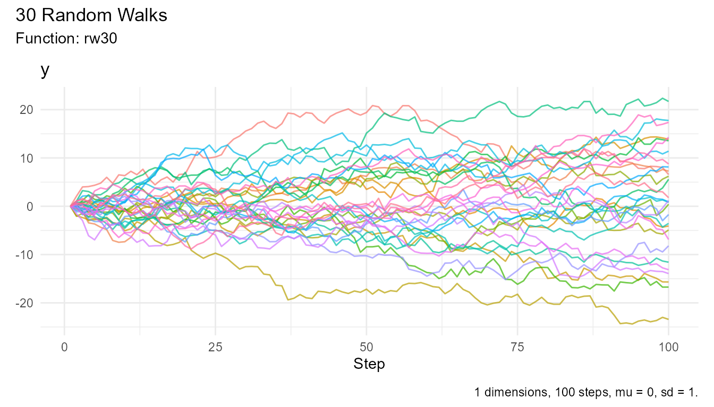
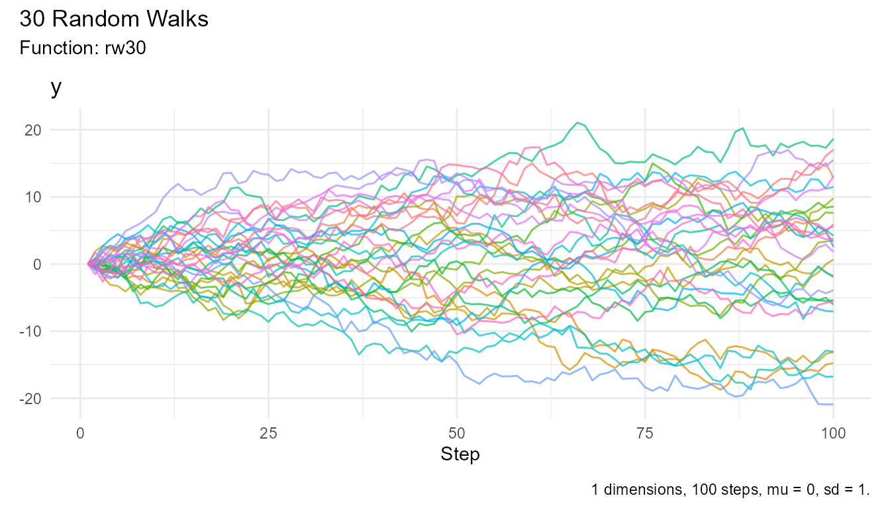
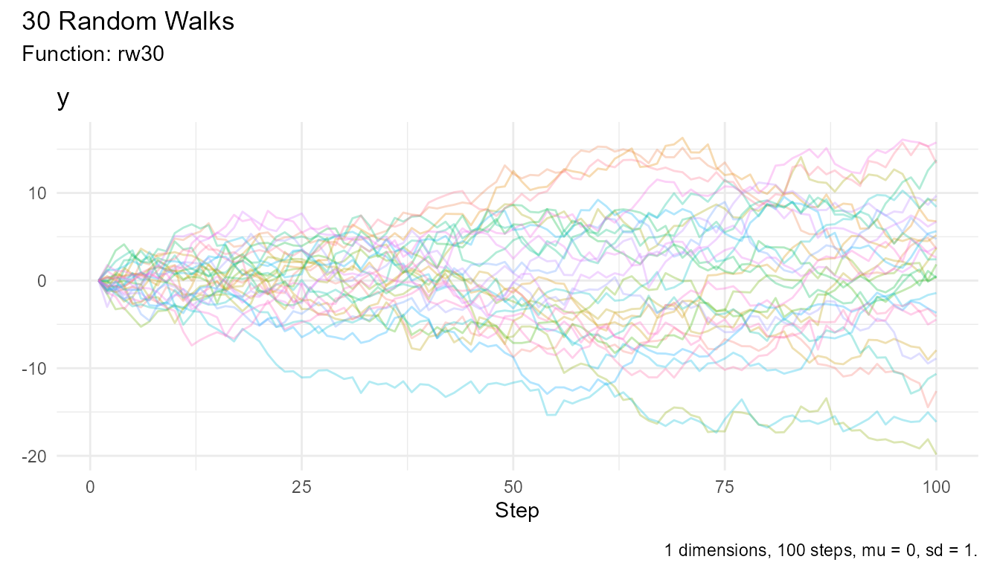

API Reference
Complete reference for all RandomWalker functions, organized by category.
Automatic Random Walks
rw30()
Quickly generate 30 random walks with 100 steps each.
Usage:
rw30()Parameters: None
Returns: Tibble with 3,000 rows (30 walks × 100 steps)
Columns: - walk_number: Factor
identifying each walk - step_number: Integer step counter
(1-100) - y: Random walk values - cum_sum,
cum_prod, cum_min, cum_max,
cum_mean: Cumulative functions can be added but are not
returned
Examples:
# Generate and view
rw30() |> head(10)
#> # A tibble: 10 × 3
#> walk_number step_number y
#> <fct> <int> <dbl>
#> 1 1 1 0
#> 2 1 2 -1.40
#> 3 1 3 -1.14
#> 4 1 4 -3.58
#> 5 1 5 -3.59
#> 6 1 6 -2.97
#> 7 1 7 -1.82
#> 8 1 8 -3.64
#> 9 1 9 -3.89
#> 10 1 10 -4.13
# Visualize
rw30() |> visualize_walks()
# Analyze
rw30() |> summarize_walks(.value = y) |> head()
#> Registered S3 method overwritten by 'quantmod':
#> method from
#> as.zoo.data.frame zoo
#> Warning: There was 1 warning in `dplyr::summarize()`.
#> ℹ In argument: `geometric_mean = exp(mean(log(y)))`.
#> Caused by warning in `log()`:
#> ! NaNs produced
#> # A tibble: 1 × 16
#> fns fns_name dimensions mean_val median range quantile_lo quantile_hi
#> <chr> <chr> <dbl> <dbl> <dbl> <dbl> <dbl> <dbl>
#> 1 rw30 Rw30 1 0.467 0.355 47.2 -12.7 12.6
#> # ℹ 8 more variables: variance <dbl>, sd <dbl>, min_val <dbl>, max_val <dbl>,
#> # harmonic_mean <dbl>, geometric_mean <dbl>, skewness <dbl>, kurtosis <dbl>Continuous Distribution Generators
All continuous distribution generators share these common parameters:
| Parameter | Type | Default | Description |
|---|---|---|---|
.num_walks |
Integer | 25 | Number of walks to generate |
.n |
Integer | 100 | Number of steps per walk |
.initial_value |
Numeric | 0 | Starting value |
.dimensions |
Integer | 1 | Spatial dimensions (1, 2, or 3) |
random_normal_walk()
Generate random walks using normal distribution.
Additional Parameters: - .mu: Mean
(default: 0) - .sd: Standard deviation (default: 1)
Example:
random_normal_walk(.num_walks = 10, .mu = 0, .sd = 1) |> head()
#> # A tibble: 6 × 8
#> walk_number step_number y cum_sum_y cum_prod_y cum_min_y cum_max_y
#> <fct> <int> <dbl> <dbl> <dbl> <dbl> <dbl>
#> 1 1 1 -0.342 -0.342 0 -0.342 -0.342
#> 2 1 2 0.169 -0.173 0 -0.342 0.169
#> 3 1 3 -0.804 -0.977 0 -0.804 0.169
#> 4 1 4 -0.876 -1.85 0 -0.876 0.169
#> 5 1 5 2.08 0.229 0 -0.876 2.08
#> 6 1 6 2.20 2.42 0 -0.876 2.20
#> # ℹ 1 more variable: cum_mean_y <dbl>
random_normal_drift_walk()
Generate random walks with explicit drift component.
Additional Parameters: - .mu: Drift
parameter (default: 0) - .sd: Standard deviation (default:
1)
brownian_motion()
Generate standard Brownian motion (Wiener process).
Additional Parameters: - .mu: Drift
coefficient (default: 0) - .sigma: Volatility coefficient
(default: 1)
geometric_brownian_motion()
Generate geometric Brownian motion (for stock prices).
Additional Parameters: - .mu: Expected
return (default: 0) - .sigma: Volatility (default: 1)
Note: Initial value defaults to 100 for this function.
random_beta_walk()
Generate walks using beta distribution.
Additional Parameters: - .shape1: First
shape parameter (α) - .shape2: Second shape parameter (β) -
.ncp: Non-centrality parameter (default: 0)
random_cauchy_walk()
Generate walks using Cauchy distribution (heavy tails).
Additional Parameters: - .location:
Location parameter (default: 0) - .scale: Scale parameter
(default: 1)
random_chisquared_walk()
Generate walks using chi-squared distribution.
Additional Parameters: - .df: Degrees
of freedom - .ncp: Non-centrality parameter (default:
0)
random_exponential_walk()
Generate walks using exponential distribution.
Additional Parameters: - .rate: Rate
parameter (default: 1)
random_f_walk()
Generate walks using F-distribution.
Additional Parameters: - .df1:
Numerator degrees of freedom - .df2: Denominator degrees of
freedom - .ncp: Non-centrality parameter (default: 0)
random_gamma_walk()
Generate walks using gamma distribution.
Additional Parameters: - .shape: Shape
parameter - .rate: Rate parameter (default: 1) -
.scale: Scale parameter (default: 1/rate)
random_lognormal_walk()
Generate walks using log-normal distribution.
Additional Parameters: - .meanlog: Mean
of log (default: 0) - .sdlog: Standard deviation of log
(default: 1)
random_logistic_walk()
Generate walks using logistic distribution.
Additional Parameters: - .location:
Location parameter (default: 0) - .scale: Scale parameter
(default: 1)
random_t_walk()
Generate walks using Student’s t-distribution.
Additional Parameters: - .df: Degrees
of freedom - .ncp: Non-centrality parameter (default:
0)
Discrete Distribution Generators
discrete_walk()
Generate simple discrete random walks (binary up/down).
Parameters: - .num_walks: Number of
walks (default: 25) - .n: Number of steps (default: 100) -
.upper_bound: Maximum step size (default: 1) -
.lower_bound: Minimum step size (default: -1) -
.upper_probability: Probability of moving up (default: 0.5)
- .initial_value: Starting value (default: 0) -
.dimensions: Spatial dimensions (default: 1)
random_binomial_walk()
Generate walks using binomial distribution.
Additional Parameters: - .size: Number
of trials - .prob: Probability of success (default:
0.5)
random_geometric_walk()
Generate walks using geometric distribution.
Additional Parameters: - .prob:
Probability of success
random_hypergeometric_walk()
Generate walks using hypergeometric distribution.
Additional Parameters: - .m: Number of
white balls - .n_param: Number of black balls -
.k: Number of balls drawn
random_multinomial_walk()
Generate walks using multinomial distribution.
Additional Parameters: - .size: Number
of trials - .prob: Vector of probabilities (must sum to
1)
random_negbinomial_walk()
Generate walks using negative binomial distribution.
Additional Parameters: - .size: Target
number of successes - .prob: Probability of success -
.mu: Alternative parameterization (mean)
random_poisson_walk()
Generate walks using Poisson distribution.
Additional Parameters: - .lambda: Rate
parameter (mean and variance)
random_wilcox_walk()
Generate walks using Wilcoxon rank sum statistic distribution.
Additional Parameters: - .m: Number of
observations in first group - .n_param: Number of
observations in second group
Custom Walks
custom_walk()
Generate random walks with custom displacement function.
Parameters: - .num_walks: Number of
walks (default: 25) - .n: Number of steps (default: 100) -
.displacement_fn: Custom function that returns displacement
value - .initial_value: Starting value (default: 0) -
.dimensions: Spatial dimensions (default: 1)
Example:
# Custom function
my_displacement <- function() {
sample(c(-2, -1, 0, 1, 2), 1, prob = c(0.1, 0.2, 0.4, 0.2, 0.1))
}
# Generate walk
custom_walk(
.num_walks = 10,
.custom_fns = my_displacement
)
random_displacement_walk()
Generate walks with custom displacement from a vector.
Parameters: - .num_walks: Number of
walks (default: 25) - .n: Number of steps (default: 100) -
.displacement: Vector of possible displacement values -
.initial_value: Starting value (default: 0) -
.dimensions: Spatial dimensions (default: 1)
Visualization Functions
visualize_walks()
Create comprehensive visualizations of random walks.
Parameters: - .data: Random walk data
(tibble) - .alpha: Line transparency, 0-1 (default: 0.7) -
.interactive: Boolean, create interactive plot (default:
FALSE) - .pluck: Select specific attributes to plot
(default: FALSE shows all) - Options: "y",
"cum_sum", "cum_prod", "cum_min",
"cum_max", "cum_mean" - Can be a vector:
c("y", "cum_sum")
Returns: - Static mode: ggplot2/patchwork object - Interactive mode: ggiraph object
Examples:
# Basic visualization
rw30() |> visualize_walks()
# Adjust transparency
rw30() |> visualize_walks(.alpha = 0.3)
# Interactive (not run in vignette)
rw30() |> visualize_walks(.interactive = TRUE)
# Select specific panels
random_normal_walk() |> visualize_walks(.pluck = "cum_sum")
random_normal_walk() |> visualize_walks(.pluck = c("y", "cum_sum", "cum_mean"))Statistical Functions
summarize_walks()
Compute comprehensive summary statistics for random walks.
Parameters: - .data: Random walk data
(tibble) - .value: Column name to summarize (unquoted) -
.group_var: Optional grouping variable (unquoted)
Returns: Tibble with statistics: - fns:
Function name - fns_name: Formatted function name -
dimensions: Number of dimensions - mean_val:
Mean - median: Median - range: Range (max -
min) - quantile_lo, quantile_hi: Quantiles -
variance, sd: Variance and standard deviation
- min_val, max_val: Minimum and maximum -
harmonic_mean, geometric_mean: Alternative
means - skewness, kurtosis: Shape measures
Examples:
walks <- rw30()
# Overall summary
walks |> summarize_walks(.value = y) |> head()
#> Warning: There was 1 warning in `dplyr::summarize()`.
#> ℹ In argument: `geometric_mean = exp(mean(log(y)))`.
#> Caused by warning in `log()`:
#> ! NaNs produced
#> # A tibble: 1 × 16
#> fns fns_name dimensions mean_val median range quantile_lo quantile_hi
#> <chr> <chr> <dbl> <dbl> <dbl> <dbl> <dbl> <dbl>
#> 1 rw30 Rw30 1 -0.341 -0.000396 44.9 -13.1 13.1
#> # ℹ 8 more variables: variance <dbl>, sd <dbl>, min_val <dbl>, max_val <dbl>,
#> # harmonic_mean <dbl>, geometric_mean <dbl>, skewness <dbl>, kurtosis <dbl>
# By walk
walks |>
summarize_walks(.value = y, .group_var = walk_number) |>
head()
#> Warning: There were 28 warnings in `dplyr::summarize()`.
#> The first warning was:
#> ℹ In argument: `geometric_mean = exp(mean(log(y)))`.
#> ℹ In group 1: `walk_number = 1`.
#> Caused by warning in `log()`:
#> ! NaNs produced
#> ℹ Run `dplyr::last_dplyr_warnings()` to see the 27 remaining warnings.
#> # A tibble: 6 × 17
#> walk_number fns fns_name dimensions mean_val median range quantile_lo
#> <fct> <chr> <chr> <dbl> <dbl> <dbl> <dbl> <dbl>
#> 1 1 rw30 Rw30 1 -6.73 -5.81 31.6 -22.0
#> 2 2 rw30 Rw30 1 -1.72 -2.00 14.8 -6.74
#> 3 3 rw30 Rw30 1 -7.88 -8.44 17.9 -15.5
#> 4 4 rw30 Rw30 1 0.0631 0.0371 11.5 -4.43
#> 5 5 rw30 Rw30 1 0.837 0.0211 13.8 -4.81
#> 6 6 rw30 Rw30 1 -10.1 -9.96 15.5 -15.0
#> # ℹ 9 more variables: quantile_hi <dbl>, variance <dbl>, sd <dbl>,
#> # min_val <dbl>, max_val <dbl>, harmonic_mean <dbl>, geometric_mean <dbl>,
#> # skewness <dbl>, kurtosis <dbl>
# Cumulative sum
walks |>
dplyr::mutate(cum_sum = cumsum(y)) |>
summarize_walks(.value = cum_sum) |>
head()
#> Warning: There was 1 warning in `dplyr::summarize()`.
#> ℹ In argument: `geometric_mean = exp(mean(log(cum_sum)))`.
#> Caused by warning in `log()`:
#> ! NaNs produced
#> # A tibble: 1 × 16
#> fns fns_name dimensions mean_val median range quantile_lo quantile_hi
#> <chr> <chr> <dbl> <dbl> <dbl> <dbl> <dbl> <dbl>
#> 1 rw30 Rw30 1 -1884. -2047. 3409. -3247. -70.5
#> # ℹ 8 more variables: variance <dbl>, sd <dbl>, min_val <dbl>, max_val <dbl>,
#> # harmonic_mean <dbl>, geometric_mean <dbl>, skewness <dbl>, kurtosis <dbl>
subset_walks()
Extract walks with extreme values.
Parameters: - .data: Random walk data
(tibble) - .value: Column name to subset by (default: “y”)
- .type: Type of subset (“max”, “min”, or “both”)
Returns: Tibble containing only the selected walk
Examples:
# Walk with maximum value
walks |> subset_walks(.type = "max", .value = "y")
# Walk with minimum value
walks |> subset_walks(.type = "min", .value = "y")Vector Functions
confidence_interval()
Calculate confidence interval for a vector.
Parameters: - .x: Numeric vector -
.interval: Confidence level (default: 0.95 for 95% CI)
Returns: Tibble with columns: - lower:
Lower confidence bound - upper: Upper confidence bound
Example:
x <- rnorm(1000, mean = 10, sd = 2)
confidence_interval(x)
# 99% CI
confidence_interval(x, .interval = 0.99)
running_quantile()
Calculate running quantile at each position.
Parameters: - .x: Numeric vector -
.probs: Probability value (0-1) - .window:
Window size (positive integer; number of points to include in each
running quantile calculation)
Returns: Numeric vector of same length
Example:
x <- rnorm(100)
running_quantile(x, .probs = 0.5, .window = 5) # Running median
euclidean_distance()
Calculate Euclidean distance from origin for multi-dimensional walks.
Parameters: - .data: Multi-dimensional
random walk data (tibble)
Returns: Original data with added
distance column
Example:
walk_2d <- random_normal_walk(.dimensions = 2)
walk_2d |> euclidean_distance(.x = x, .y = y)Cumulative Functions
These are automatically included in walk data:
-
std_cum_sum_augment(): Cumulative sum -
std_cum_prod_augment(): Cumulative product -
std_cum_min_augment(): Cumulative minimum -
std_cum_max_augment(): Cumulative maximum -
std_cum_mean_augment(): Cumulative mean
Generally used internally, but can be applied to custom data.
Utility Functions
rand_walk_helper()
Internal helper for adding cumulative columns.
Parameters: - .data: Data frame -
.value: Initial value
Returns: Data frame with cumulative columns added
Note: Typically used internally by generator functions.
convert_snake_to_title_case()
Convert snake_case strings to Title Case.
Parameters: - string: Character string
in snake_case
Returns: Character string in Title Case
Example:
convert_snake_to_title_case("random_normal_walk")
#> "Random Normal Walk"
convert_snake_to_title_case("cum_sum")
#> "Cumulative Sum"
get_attributes()
Get attributes without row names.
Parameters: - .data: Object with
attributes
Returns: List of attributes (excluding row.names)
Example:
walks <- rw30()
get_attributes(walks)
#> $names
#> [1] "walk_number" "step_number" "y"
#>
#> $class
#> [1] "tbl_df" "tbl" "data.frame"
#>
#> $num_walks
#> [1] 30
#>
#> $num_steps
#> [1] 100
#>
#> $mu
#> [1] 0
#>
#> $sd
#> [1] 1
#>
#> $fns
#> [1] "rw30"
#>
#> $dimension
#> [1] 1Data Structure
Return Format
All generator functions return a tibble with consistent structure:
1D Walks:
# A tibble: N × 8
walk_number step_number y cum_sum cum_prod cum_min cum_max cum_mean
<fct> <int> <dbl> <dbl> <dbl> <dbl> <dbl> <dbl>2D Walks:
# A tibble: N × 14
walk_number step_number x y cum_sum_x cum_sum_y cum_prod_x cum_prod_y
<fct> <int> <dbl> <dbl> <dbl> <dbl> <dbl> <dbl>
# ... with 6 more columns: cum_min_x, cum_min_y, cum_max_x, cum_max_y,
# cum_mean_x, cum_mean_y3D Walks:
Attributes
All generated walks include attributes:
walks <- random_normal_walk(.num_walks = 10, .n = 100)
atb <- attributes(walks)
atb[!names(atb) %in% c("row.names")]
#> $class
#> [1] "tbl_df" "tbl" "data.frame"
#>
#> $names
#> [1] "walk_number" "step_number" "y" "cum_sum_y" "cum_prod_y"
#> [6] "cum_min_y" "cum_max_y" "cum_mean_y"
#>
#> $n
#> [1] 100
#>
#> $num_walks
#> [1] 10
#>
#> $mu
#> [1] 0
#>
#> $sd
#> [1] 0.1
#>
#> $initial_value
#> [1] 0
#>
#> $replace
#> [1] TRUE
#>
#> $samp
#> [1] TRUE
#>
#> $samp_size
#> [1] 80
#>
#> $periods
#> [1] 80
#>
#> $fns
#> [1] "random_normal_walk"
#>
#> $dimensions
#> [1] 1Package Information
Version: 1.0.0.9000 (development)
License: MIT
Authors: - Steven P. Sanderson II, MPH (Author, Creator, Maintainer) - Antti Rask (Contributor, Visualization)
Dependencies: - dplyr - tidyr - purrr - rlang - patchwork - NNS - ggiraph
Suggested: - knitr - rmarkdown - stats - ggplot2 - tidyselect
Function Index
By Category
Generation: - rw30() - Quick 30 walks -
random_normal_walk() - Normal distribution -
brownian_motion() - Brownian motion -
geometric_brownian_motion() - GBM -
discrete_walk() - Binary walk - 20+ more distribution
generators
Visualization: - visualize_walks() -
Main plotting function
Analysis: - summarize_walks() - Summary
statistics - subset_walks() - Extract extremes -
euclidean_distance() - Distance calculations -
confidence_interval() - Confidence intervals -
running_quantile() - Running quantiles
Utilities: - rand_walk_helper() - Add
cumulative columns - convert_snake_to_title_case() - String
formatting - get_attributes() - Get attributes
See Also
-
Getting Started -
vignette("getting-started") -
Home Wiki -
vignette("home") - Online Documentation: https://www.spsanderson.com/RandomWalker/
- GitHub Repository: https://github.com/spsanderson/RandomWalker
- Issue Tracker: https://github.com/spsanderson/RandomWalker/issues